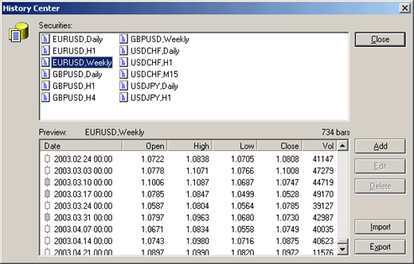

Архив котировок
Архив котировок может
быть активизирован из главного меню "Сервис-Архив котировок" (Tools-History Center).

В верхнем окне показан список инструментов, по
которым имеется история котировок. Истории котировок поступают с сервера
при открытии соответствующего графика. По двойному щелчку мыши на
каком-либо инструменте в нижнем окне появляется список котировок этого
инструмента. Этот список (историю) можно редактировать при помощи кнопок
"Добавить" (Add), "Изменить" (Edit), "Удалить" (Delete).
Данные списка можно также импортировать (Import)
и экспортировать(Export). Файлы историй котировок
с именами SSSSSSPP.hst (где SSSSSS - название инструмента, PP - временной
период) хранятся в директории bases. Эти файлы
могут быть исключительно полезны при тестировании торговых стратегий.
Назад Содержание Далее
 |